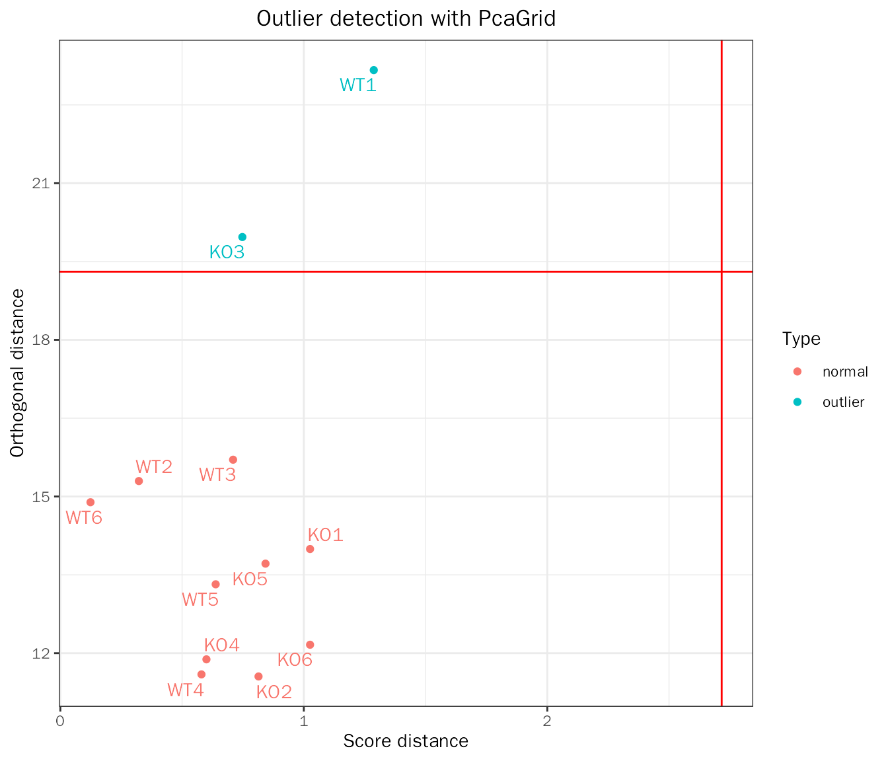

QualityControl.RmdDEbPeak provides two aspects of Quality Control (QC):
The data used here are RNA-seq data of the external granule layer in the cerebellum of control and conditional SnoN knockout mice, the raw data are stored in GSE120279, they are used in Robust principal component analysis for accurate outlier sample detection in RNA-seq data.
First, we create DESeqDataSet object with above dataset:
suppressWarnings(suppressMessages(library(DESeq2)))
suppressWarnings(suppressMessages(library(DEbPeak)))
count.file <- system.file("extdata", "snon_count.txt", package = "DEbPeak")
meta.file <- system.file("extdata", "snon_meta.txt", package = "DEbPeak")
count.matrix <- read.table(file = count.file, header = T, sep = "\t")
head(count.matrix)## KO1 KO2 KO3 KO4 KO5 KO6 WT1 WT2 WT3 WT4 WT5
## ENSMUSG00000000001.4 4556 4218 3835 3718 5741 3875 4115 5074 2931 4374 5118
## ENSMUSG00000000003.15 0 0 0 0 0 0 0 0 0 0 0
## ENSMUSG00000000028.14 350 579 435 316 432 317 245 621 419 506 545
## ENSMUSG00000000031.16 268 804 66 207 46 66 336 112 60 69 137
## ENSMUSG00000000037.16 262 157 184 162 301 233 311 176 94 139 229
## ENSMUSG00000000049.11 0 0 0 0 0 0 1 0 2 0 1
## WT6
## ENSMUSG00000000001.4 3625
## ENSMUSG00000000003.15 0
## ENSMUSG00000000028.14 371
## ENSMUSG00000000031.16 193
## ENSMUSG00000000037.16 186
## ENSMUSG00000000049.11 0
meta.info <- read.table(file = meta.file, header = T)
head(meta.info)## condition
## KO1 KO
## KO2 KO
## KO3 KO
## KO4 KO
## KO5 KO
## KO6 KO
dds <- DESeq2::DESeqDataSetFromMatrix(countData = count.matrix, colData = meta.info, design = ~condition)
dds## class: DESeqDataSet
## dim: 53379 12
## metadata(1): version
## assays(1): counts
## rownames(53379): ENSMUSG00000000001.4 ENSMUSG00000000003.15 ...
## ENSMUSG00000115849.1 ENSMUSG00000115850.1
## rowData names(0):
## colnames(12): KO1 KO2 ... WT5 WT6
## colData names(1): conditionThis plot shows proportion of genes detected in different samples at different CPM thresholds. Theoretically, all samples should be similarly distributed, so as to avoid false positive results obtained from detection problems.
CountQC(deobj = dds, group.key = "condition", type = "cpm")## Differential expression analysis with DESeq2!## [1] "Warning: 25096 features with 0 counts in all samples are to be removed for this analysis."
## [1] "Count distributions are to be computed for:"
## [1] "KO1" "KO2" "KO3" "KO4" "KO5" "KO6" "WT1" "WT2" "WT3" "WT4" "WT5" "WT6"This plot shows the proportion of genes detected at different sequencing depths. If the proportion is too low, it indicates that many genes are not detected and therefore some important information may be missing, and increasing the sequencing volume can effectively solve this problem.
CountQC(deobj = dds, group.key = "condition", type = "saturation")## Differential expression analysis with DESeq2!QC on samples including four aspects:
SampleRelation(deobj = dds,transform.method = "rlog",anno.key = "condition")## Differential expression analysis with DESeq2!
qc.pca.res=PCA(deobj = dds,transform.method = "rlog")## Differential expression analysis with DESeq2!## Use all genes for PCA!
PCAtools::biplot(qc.pca.res,x="PC1",y="PC2",colby="condition",legendPosition="bottom")
outlier.res=OutlierDetection(deobj = dds,var.genes = NULL,transform.method = "rlog")## Differential expression analysis with DESeq2!## Use all genes for PCA!## Detecting 2 outlier(s): KO3,WT1
outlier.res$outlier## [1] "KO3" "WT1"
outlier.res$plot
For batch correction and outlier detection, you can use the following codes:
# batch effect correction
# this is a demo scripts
batch.res=QCPCA(deobj = dds,var.genes = NULL,remove.sample=NULL,transform.method = "rlog",batch = "cell",
colby = "dex", outlier.detection = F)
batch.res$plot
# outlier detection
outlier.res=QCPCA(deobj = dds,var.genes = NULL,remove.sample=NULL,transform.method = "rlog",
outlier.detection = T,rpca.method = "PcaGrid")
outlier.res$plot
# the final dds
dds=outlier.res$deobj # or outlier.res$plotSave results for downstream analysis:
save.image(file = "/home/songyabing/R/learn/tmp/DEbPeak/example.RData")## R version 4.0.3 (2020-10-10)
## Platform: x86_64-conda-linux-gnu (64-bit)
## Running under: CentOS Linux 7 (Core)
##
## Matrix products: default
## BLAS/LAPACK: /home/softwares/anaconda3/envs/r4.0/lib/libopenblasp-r0.3.12.so
##
## locale:
## [1] LC_CTYPE=zh_CN.UTF-8 LC_NUMERIC=C
## [3] LC_TIME=zh_CN.UTF-8 LC_COLLATE=zh_CN.UTF-8
## [5] LC_MONETARY=zh_CN.UTF-8 LC_MESSAGES=zh_CN.UTF-8
## [7] LC_PAPER=zh_CN.UTF-8 LC_NAME=C
## [9] LC_ADDRESS=C LC_TELEPHONE=C
## [11] LC_MEASUREMENT=zh_CN.UTF-8 LC_IDENTIFICATION=C
##
## attached base packages:
## [1] stats4 stats graphics grDevices utils datasets methods
## [8] base
##
## other attached packages:
## [1] DEbPeak_0.9.0 DESeq2_1.30.1
## [3] SummarizedExperiment_1.20.0 Biobase_2.50.0
## [5] MatrixGenerics_1.2.1 matrixStats_0.58.0
## [7] GenomicRanges_1.42.0 GenomeInfoDb_1.26.7
## [9] IRanges_2.24.1 S4Vectors_0.28.1
## [11] BiocGenerics_0.42.0
##
## loaded via a namespace (and not attached):
## [1] rsvd_1.0.3
## [2] ggvenn_0.1.9
## [3] apeglm_1.12.0
## [4] Rsamtools_2.6.0
## [5] rsvg_2.1
## [6] foreach_1.5.1
## [7] rprojroot_2.0.2
## [8] crayon_1.4.1
## [9] V8_3.4.2
## [10] MASS_7.3-53.1
## [11] nlme_3.1-152
## [12] backports_1.2.1
## [13] sva_3.38.0
## [14] GOSemSim_2.25.0
## [15] rlang_1.0.3
## [16] XVector_0.30.0
## [17] readxl_1.3.1
## [18] irlba_2.3.5
## [19] limma_3.46.0
## [20] GOstats_2.56.0
## [21] BiocParallel_1.24.1
## [22] rjson_0.2.20
## [23] bit64_4.0.5
## [24] glue_1.6.2
## [25] DiffBind_3.0.15
## [26] mixsqp_0.3-43
## [27] pheatmap_1.0.12
## [28] parallel_4.0.3
## [29] AnnotationDbi_1.52.0
## [30] DEFormats_1.18.0
## [31] base64url_1.4
## [32] tcltk_4.0.3
## [33] DOSE_3.23.2
## [34] haven_2.3.1
## [35] tidyselect_1.1.0
## [36] rio_0.5.27
## [37] XML_3.99-0.6
## [38] tidyr_1.1.3
## [39] ggpubr_0.4.0
## [40] GenomicAlignments_1.26.0
## [41] xtable_1.8-4
## [42] magrittr_2.0.1
## [43] evaluate_0.14
## [44] ggplot2_3.3.5
## [45] cli_3.3.0
## [46] zlibbioc_1.36.0
## [47] hwriter_1.3.2
## [48] rstudioapi_0.13
## [49] bslib_0.3.1
## [50] GreyListChIP_1.22.0
## [51] fastmatch_1.1-3
## [52] BiocSingular_1.6.0
## [53] xfun_0.30
## [54] askpass_1.1
## [55] clue_0.3-59
## [56] gson_0.0.9
## [57] cluster_2.1.1
## [58] caTools_1.18.2
## [59] tidygraph_1.2.0
## [60] tibble_3.1.0
## [61] ggrepel_0.9.1
## [62] Biostrings_2.58.0
## [63] png_0.1-7
## [64] withr_2.4.1
## [65] bitops_1.0-6
## [66] ggforce_0.3.3
## [67] RBGL_1.66.0
## [68] plyr_1.8.6
## [69] cellranger_1.1.0
## [70] GSEABase_1.52.1
## [71] pcaPP_2.0-1
## [72] dqrng_0.2.1
## [73] coda_0.19-4
## [74] pillar_1.5.1
## [75] gplots_3.1.1
## [76] GlobalOptions_0.1.2
## [77] cachem_1.0.4
## [78] GenomicFeatures_1.42.2
## [79] fs_1.5.0
## [80] GetoptLong_1.0.5
## [81] clusterProfiler_4.7.1
## [82] DelayedMatrixStats_1.12.3
## [83] vctrs_0.4.1
## [84] ellipsis_0.3.2
## [85] generics_0.1.0
## [86] plot3D_1.4
## [87] tools_4.0.3
## [88] foreign_0.8-81
## [89] NOISeq_2.34.0
## [90] munsell_0.5.0
## [91] tweenr_1.0.2
## [92] fgsea_1.16.0
## [93] DelayedArray_0.16.3
## [94] fastmap_1.1.0
## [95] compiler_4.0.3
## [96] abind_1.4-5
## [97] rtracklayer_1.50.0
## [98] TxDb.Hsapiens.UCSC.hg19.knownGene_3.2.2
## [99] GenomeInfoDbData_1.2.4
## [100] gridExtra_2.3
## [101] edgeR_3.32.1
## [102] lattice_0.20-45
## [103] ggnewscale_0.4.7
## [104] AnnotationForge_1.32.0
## [105] utf8_1.2.1
## [106] dplyr_1.0.5
## [107] BiocFileCache_1.14.0
## [108] jsonlite_1.7.2
## [109] scales_1.1.1
## [110] graph_1.68.0
## [111] carData_3.0-4
## [112] sparseMatrixStats_1.2.1
## [113] genefilter_1.72.1
## [114] car_3.0-11
## [115] doParallel_1.0.16
## [116] latticeExtra_0.6-29
## [117] brew_1.0-6
## [118] checkmate_2.0.0
## [119] rmarkdown_2.14
## [120] openxlsx_4.2.3
## [121] pkgdown_1.6.1
## [122] cowplot_1.1.1
## [123] textshaping_0.1.2
## [124] forcats_0.5.1
## [125] downloader_0.4
## [126] BSgenome_1.58.0
## [127] igraph_1.3.4
## [128] survival_3.2-10
## [129] numDeriv_2016.8-1.1
## [130] yaml_2.2.1
## [131] plotrix_3.8-2
## [132] systemfonts_1.0.1
## [133] ashr_2.2-47
## [134] SQUAREM_2021.1
## [135] htmltools_0.5.2
## [136] memoise_2.0.0
## [137] VariantAnnotation_1.36.0
## [138] locfit_1.5-9.4
## [139] graphlayouts_0.7.1
## [140] batchtools_0.9.15
## [141] PCAtools_2.2.0
## [142] viridisLite_0.4.0
## [143] digest_0.6.27
## [144] rrcov_1.7-0
## [145] assertthat_0.2.1
## [146] rappdirs_0.3.3
## [147] emdbook_1.3.12
## [148] RSQLite_2.2.5
## [149] amap_0.8-18
## [150] yulab.utils_0.0.4
## [151] misc3d_0.9-1
## [152] data.table_1.14.2
## [153] blob_1.2.1
## [154] ragg_0.4.0
## [155] labeling_0.4.2
## [156] splines_4.0.3
## [157] Cairo_1.5-12.2
## [158] ggupset_0.3.0
## [159] RCurl_1.98-1.3
## [160] broom_0.7.5
## [161] hms_1.0.0
## [162] colorspace_2.0-0
## [163] BiocManager_1.30.16
## [164] shape_1.4.6
## [165] sass_0.4.1
## [166] Rcpp_1.0.9
## [167] mvtnorm_1.1-2
## [168] circlize_0.4.15
## [169] enrichplot_1.10.2
## [170] fansi_0.4.2
## [171] truncnorm_1.0-8
## [172] ChIPseeker_1.33.0.900
## [173] R6_2.5.0
## [174] grid_4.0.3
## [175] lifecycle_1.0.0
## [176] ShortRead_1.48.0
## [177] zip_2.1.1
## [178] curl_4.3
## [179] ggsignif_0.6.3
## [180] jquerylib_0.1.3
## [181] robustbase_0.95-0
## [182] DO.db_2.9
## [183] Matrix_1.3-3
## [184] qvalue_2.22.0
## [185] desc_1.3.0
## [186] RColorBrewer_1.1-2
## [187] iterators_1.0.13
## [188] stringr_1.4.0
## [189] DOT_0.1
## [190] ggpie_0.2.1
## [191] beachmat_2.6.4
## [192] polyclip_1.10-0
## [193] biomaRt_2.46.3
## [194] purrr_0.3.4
## [195] shadowtext_0.0.9
## [196] gridGraphics_0.5-1
## [197] mgcv_1.8-34
## [198] ComplexHeatmap_2.13.1
## [199] openssl_1.4.3
## [200] patchwork_1.0.0
## [201] bdsmatrix_1.3-4
## [202] codetools_0.2-18
## [203] invgamma_1.1
## [204] GO.db_3.12.1
## [205] gtools_3.8.2
## [206] prettyunits_1.1.1
## [207] dbplyr_2.1.1
## [208] gtable_0.3.0
## [209] DBI_1.1.1
## [210] highr_0.8
## [211] ggfun_0.0.6
## [212] httr_1.4.2
## [213] KernSmooth_2.23-18
## [214] stringi_1.5.3
## [215] progress_1.2.2
## [216] reshape2_1.4.4
## [217] farver_2.1.0
## [218] annotate_1.68.0
## [219] viridis_0.6.1
## [220] Rgraphviz_2.34.0
## [221] xml2_1.3.2
## [222] bbmle_1.0.24
## [223] systemPipeR_1.24.3
## [224] boot_1.3-28
## [225] geneplotter_1.68.0
## [226] ggplotify_0.1.0
## [227] Category_2.56.0
## [228] DEoptimR_1.0-11
## [229] bit_4.0.4
## [230] scatterpie_0.1.7
## [231] jpeg_0.1-8.1
## [232] ggraph_2.0.5
## [233] pkgconfig_2.0.3
## [234] rstatix_0.7.0
## [235] knitr_1.37